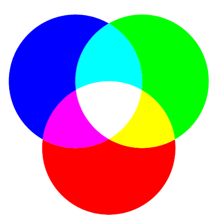
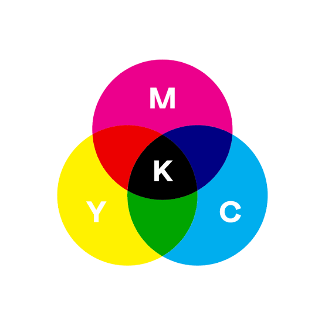
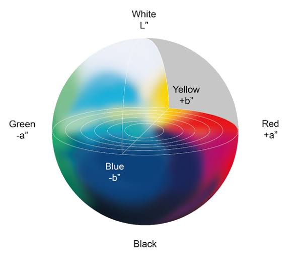
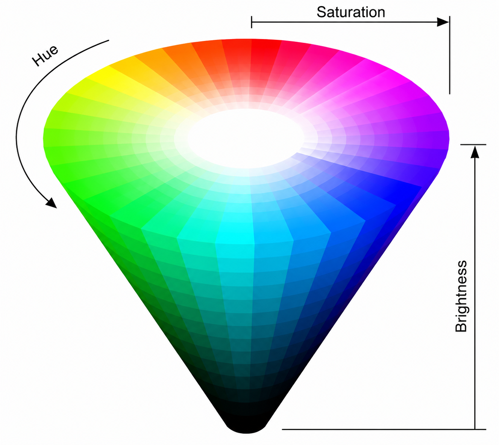

I modelli di colore sono sistemi che permettono di descrivere e organizzare i colori in modo preciso, scomponendoli nelle loro componenti fondamentali.
Fin da piccoli impariamo che mescolando colori primari si possono ottenere nuove tonalità, ma in realtà ogni sistema di colore si basa su regole specifiche che permettono di rappresentare i colori anche in forma numerica e digitale.
RGB
Il modello RGB è un sistema digitale basato sulla luce e definito additivo perché i colori si ottengono sommando tre componenti: rosso, verde e blu.
Con tutte le luci spente si ottiene il nero, mentre con la massima intensità si ottiene il bianco. La combinazione e variazione di queste tre luci permette di creare milioni di colori.
Il modello RGB imita il funzionamento dell’occhio umano ed è utilizzato in dispositivi come schermi, smartphone, fotocamere e scanner, dove i colori sono rappresentati con valori da 0 a 255 o con codici esadecimali.


CMYK
Il modello CMYK è usato principalmente nella stampa ed è un modello sottrattivo, perché i pigmenti assorbono la luce. Utilizza quattro colori: ciano, magenta, giallo e nero.
La combinazione permette di ottenere altri colori, mentre il nero viene aggiunto per creare tonalità più scure e contrasti migliori.
A differenza dell’RGB, che si basa sulla luce, il CMYK usa pigmenti ed è rappresentato tramite percentuali.
HSB / HSV / HSL
Il modello HSB è usato nei software di grafica perché descrive i colori in modo intuitivo attraverso tre elementi: tonalità, saturazione e luminosità.
La tonalità indica il colore, la saturazione la sua intensità e la luminosità quanto è chiaro o scuro. Con saturazione pari a zero si ottiene il grigio, mentre con luminosità pari a zero il nero.
Il modello HSL è una variante simile che usa il concetto di chiarezza per gestire meglio il rapporto tra bianco e nero.


LAB
Il modello LAB è un sistema avanzato basato sulla percezione umana del colore e indipendente dai dispositivi.
È formato da tre valori: “L” per la luminosità, “a” per il rapporto rosso-verde e “b” per il rapporto blu-giallo.
Grazie alla sua precisione, rappresenta i colori in modo più realistico rispetto a RGB e CMYK, descrivendo meglio le differenze che l’occhio umano percepisce.